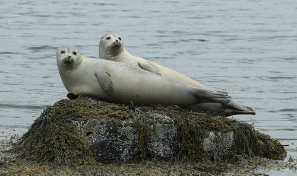
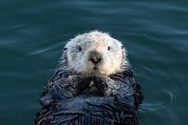
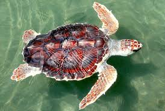
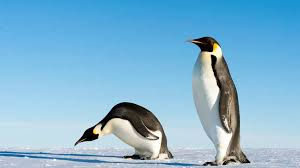
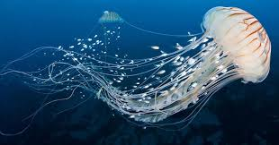
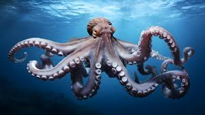
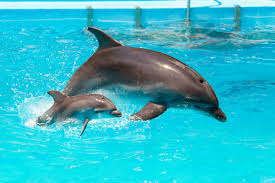
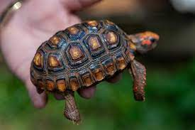
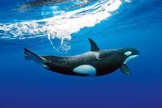

Aquatico
saiba mais sobre os animais e as curiosidades

Foca
Elas dormem embaixo da água, elas boiam ou presas em gelo subindo só para respirar

Lontra
Usam pedras como ferramentas, como para abrir conchas, batendo como se fosse um martelo.

tartaruga
A carapaça faz parte do corpo, ele faz parte da coluna e das costelas da tartaruga.

Pinguim
Eles formam casais que ficam juntos por anos, e reconhecem o parceiro pelo som da voz.

Agua viva
elas nn possuem cerebro, nem coração e nem ossos, e mesmo assim conseguem nadar, caçar e reagir ao ambiente.

Polvo
O sangue do polvo é azul, a coloração vem por que o sangue usa cobre ao invés de ferro.

Golfinho
um dos animais mais inteligentes do mundo.

Jabuti
O jabuti é 100% terrestre, diferente da tartaruga, pois não nada bem.

Orca
é uma caçadora perfeita, pois é um dos predadores mais inteligentes do planeta.